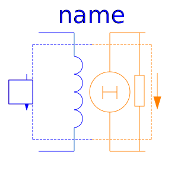
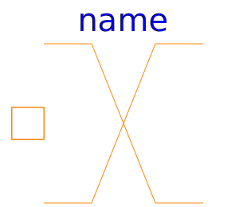

Basic elements of magnetic network models
| Name | Description |
|---|---|
| Zero magnetic potential | |
| Ideal electro-magnetic energy conversion | |
|  ElectroMagneticConverterWithLeakageInductance | Electro-magnetic energy conversion with a leakage inductance |
| Constant reluctance | |
| Constant permeance | |
| Leakage reluctance with respect to the reluctance of a useful flux path (not for dynamic simulation of actuators) | |
| For modelling of eddy current in a conductive magnetic flux tube | |
| Idle running branch | |
| Short cut branch | |
|  Crossing | Crossing of two branches |